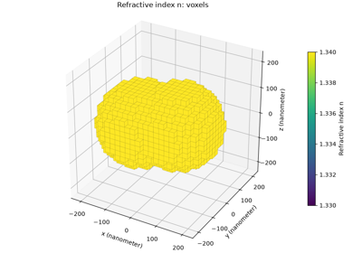
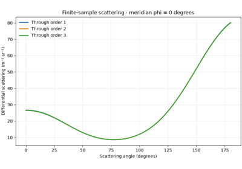
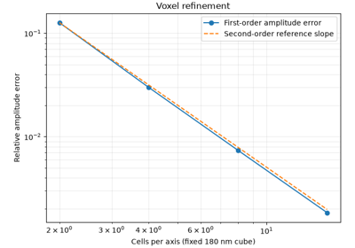
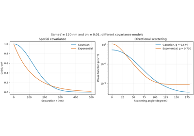
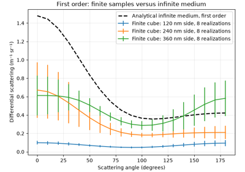
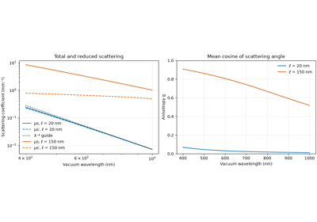
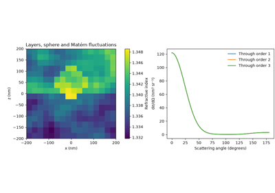
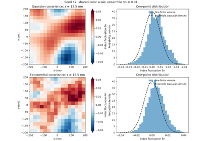
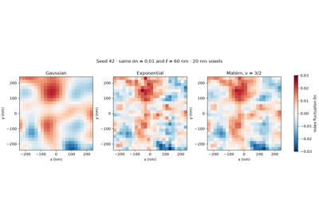
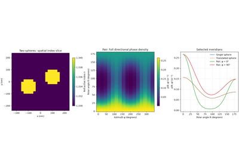

Examples#
These top-level scripts are executed by Sphinx Gallery. Each begins with a reStructuredText title and narrative description. Figures are displayed alongside their code in the generated documentation.
Finite-medium examples include Matplotlib 3D views of the input field.
Structured spheres use voxel geometry; random and layered fields use orthogonal
slices. Ensemble examples show one labelled realization rather than an averaged
medium. Call plt.show() to display figures locally; rotation requires an
interactive Matplotlib backend. The gallery captures static images and needs no
Plotly dependency. Optional browser views remain available through
Volume.plot_3d(backend="plotly") with BornSim[visualization].
Inputs use TypedUnit quantities. Analytical examples describe infinite-medium first-order scattering; numerical Born-series examples describe finite samples.
Start with structured_media.py, random_medium.py and
compare_orders.py for numerical medium construction and result plots.
RandomMedium defines Gaussian, exponential, or Whittle–Matérn covariance;
StructuredMedium composes layers and shaped inclusions.
The separately labelled analytical examples use AnalyticalMedium
for the existing first-order formulas. Medium itself is abstract. analytical_scattering.py illustrates that first-order path. wavelength_dependence.py sweeps total
and reduced scattering and anisotropy. covariance_models.py compares the
spatial covariance choices, and random_medium.py visualizes seeded
three-dimensional fields and their one-point distributions.
dielectric_sphere.py constructs a constant-index sphere in a homogeneous
background using Sphere and StructuredMedium, then plots its geometry and differential
cross section. Custom fields need not have homogeneous random statistics.
phase_function.py compares phase functions and polar-angle densities for
three correlation lengths. result_plots.py uses result methods to plot
scattering, angular/polar/3D phase-function views, and numerical field norms.
Result plotting methods return Matplotlib figures. Call plt.show() to
display them; Sphinx Gallery captures each figure when building the docs.
born_interference.py explains coherent amplitude summation and signed
interference between Born terms. save_load_results.py demonstrates
unitful archives, recorded calculation settings, and plotting restored data.
The numerical validation examples isolate voxel refinement, angular quadrature convergence, realization-count uncertainty, and finite-size differences from the analytical first-order model. These checks address different errors and do not establish universal Born convergence.

A dielectric sphere in a homogeneous background

Save results and inspect calculation provenance

Grid refinement against an exact cube integral

Gaussian and exponential spatial covariance

Finite samples and analytical first-order scattering

Wavelength dependence of scattering and anisotropy

Layers and scatterers with numerical random fluctuations

Visualize seeded three-dimensional random media

Theory figure: covariance and simulated random fields

Theory figure: translation and directional interference